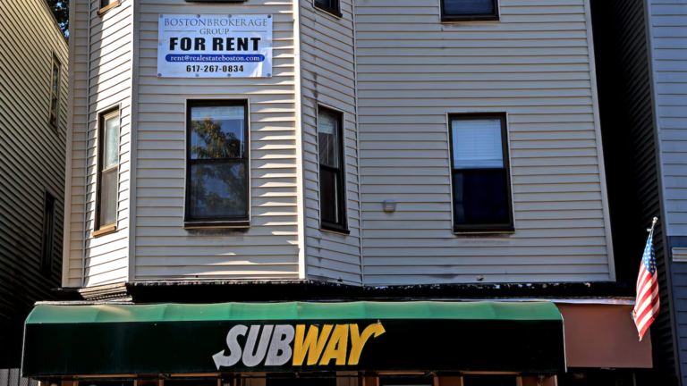

01

韦斯顿电力选择
Weston Power Choice
韦斯顿电力选择是一个为居民和商业业主提供更多选择和控制权的电力供应项目。
Weston Power Choice is a Town electricity supply program that gives residents and business owners more choice and control over how we power our community.
Town of Weston Massachusetts · 2026-11-05
原始报道 / Original source ↗02

公羊队明星外接手的任期“可能结束”
Rams star wide receiver’s tenure ‘probably ending’ according to NFL insider
NFL内部人士表示，公羊队明星外接手的任期可能即将结束。
Could the Patriots enter the bidding war for Puka Nacua?
Boston.com · 2026-11-22
原始报道 / Original source ↗03

大波士顿地区“低价城镇”的房屋现已售价60万美元
Homes in a ‘low-priced town’ in Greater Boston are now $600,000, a new report says.
一份新报告显示，大波士顿地区的“低价城镇”房屋现已售价60万美元。
The report paints a grim picture overall for Boston’s housing market.
Boston.com · 2026-11-22
原始报道 / Original source ↗04

CREDA马萨诸塞州任命帕特里克·苏萨为2027年主席
CREDA Massachusetts Names Patrick Sousa 2027 President; Melissa Schrock to Serve as Board Chair
CREDA马萨诸塞州选举新领导层，并欢迎17名董事会成员。
Commercial real estate association elects new leadership, welcomes 17 board members and recognizes industry leaders and outstanding development projects across Massachusetts.
Boston Real Estate Times · 2026-11-20
原始报道 / Original source ↗05

FBI调查其国家刑事司法数据库的明显黑客事件
FBI investigating apparent hack of its key national criminal justice database, AP source says
FBI正在调查其关键国家刑事司法数据库的明显黑客事件。
Asked about the subject on Saturday, President Donald Trump said in a Fox News Channel interview: “We just heard about it, and I will say that it’s not good.”
Boston.com · 2026-11-21
原始报道 / Original source ↗